Constitution or rules, 16 pages, plus 2 additional copies
Constitution of the New York State AFL-CIO, as amended 1992 (partial copy)
1992 edition
The cover, table of contents, and pages 1–13 of the state federation's constitution as amended at its Twenty-seventh Constitutional Convention (August 31–September 2, 1992). It covers the federation's objects, affiliates, conventions, executive council, and committees. The pages were photographed in reverse order and are shown in reading order.
Page 5 was photographed twice and the cover appears on a second copy.
Download or cite this itemPages

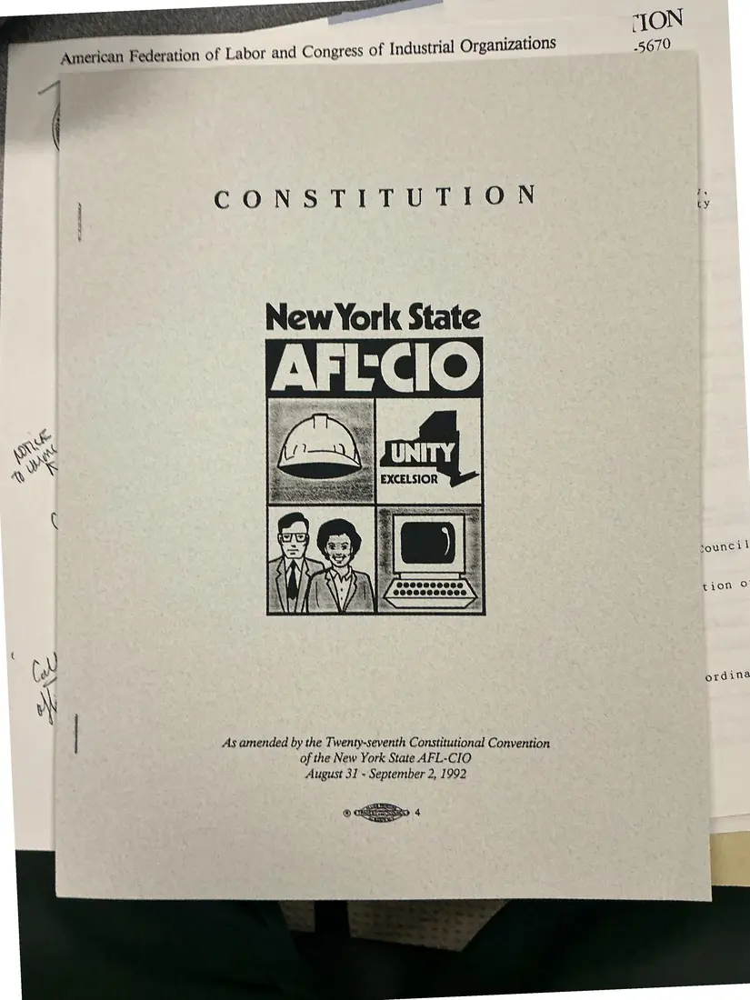
(open zoom view)Read the page text (machine-read, contains errors)
This text was generated automatically from the photograph and has not been corrected. The image is the authoritative record.
eS a vas American Federation of Labor and Congress of Industrial Organizations CONSTITUTION eae ey New York State EXCELSIOR | As amended by the Twenty-seventh Constitutional Convention of the New York State AFL-CIO August 31 - September 2, 1992 TION -5670 ordina

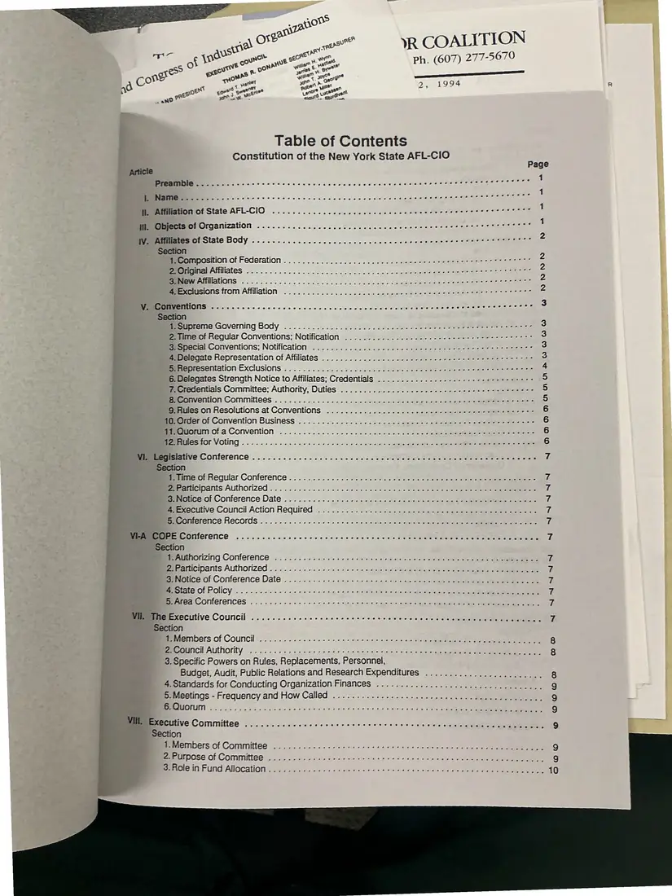
(open zoom view)Read the page text (machine-read, many errors)
This text was generated automatically from the photograph and has not been corrected. The image is the authoritative record.
nia) S enn esse YR COALITI ON of ICE co st Ou te, Ph. (607) 277-5670 seo OS al Nore Sa. ON ne owes ee te —— a erat aot 2, 1994 R ao 3 Sat ME ‘Sass? eau Table of Contents Constitution of the New York State AFL-CIO Page MME G5 5.2 sic 010m oie) ve 6 apa ave avs 331009 a oie died alayeials ss) ois Selene a gic tise 1 Ee ois oe ees 6 056 2 bie 2510s Hie wleiviee w eieralno 4 dla aiolske etn seri Shea Siete a Tick ai 1 MIN State AFL-CIO ©... 5. occ. citsic on oils worele oo DRO Mee a era ems Case 1 PETC SSAIMZAUON o.oo. 5s ee ve Seb be cece ewe widivciew ens ocee ariigy amr se tii 1 SENEEEOT State BOUY 25 coe oo ois oe wien nies os oe ne wo eo mie ons sieysieln a) miele ine cmc gia) ce 2 Section Pemmemer AISA OF Federation |... os cee viene wig oieln « wi rieemyaele eietecicpe alae Oe ioe oie 2 ERE nme ARMED Ee (20. our coer Ur ot 2 RU Ce Sere remy Metin: SEU ances dorm aCOmROCN TOs 2 REXGHISIONS (WOMVAMMIAUION ool oe ooo Fale wale Huey pepe oi So eae epee 2 RIRIEEMIONNS Foes << 5 a 0 oo oo wine oe = « wiriciniv ce owiclcleitisiels)sinth Flame cia alse oleielelsisi-(siemieiee ee Section meoerreme Governing Body ... 2.222522) See ee eet eee ern 3 2. Time of Regular Conventions; Notification ..............02-- cee eee cette? 3 sespecial Conventions; Notification .... 2.00 c5 cee cee ee dene ct en einewe ete ets eerase 3 4. Delegate Representation of Affiliates ........... 0.202. e eee ee ne rere eetees 3 peercesemation Exclusions «2.2.5: lesa Geran aa pec eee ee oe ee Se eg a eee 4 6. Delegates Strength Notice to Affiliates; Credentials ............-.--22-0+eeeeeeeeree? 5 7. Credentials Committee; Authority, Duties ........0.... 0c e eee cee cee ee ener eeee 5 BEOCMIVERIION GOMMIBCES ooo. cane 5 20k, ayes nsf geis leceeainscs eee erebeyer peta ore agent ease ete kone 5 fees on Resolutions at Conventions «.-. ... 2.6 iene vc « 00 epeisictess oinial-\eimi a mid eel ee n= 6 Bemendernon Convention Business 2... 265... 065 dic o/s wae eee ee ee eee 6 Bema tHT OF a COMVeEntON. oo. 2 ee eee ace os on Scio oye ne Dee a eee eee 6 i PREPRESS FON. VOUING 5 soso eisai vsin 0 o.0 bono wn atel cist tie bos ep se ay eens oe eee ee 6 MMEMESEAHVECOIMCTOMCE . =. 55 oie 2 nw wore = eis! n uo nie vin wletatere a tarateie oreye loata uitetetateratnte te eteretarens 7 ; Section Pmane or nequiar Conference : 5...) 22.6 a ae ee ee ae Mt RI Bach 7 Pamamcipants Authorized oo 2.2 sone eco ere ee ee eee 7 percuce.of. Conference Date 2.0.0... 2. Sette See ee a ee eee 7 ‘ maEexeciuive Council Action Required .......0. - i028 weit epee eee eee 7 : ERECCHMETENCE ROCOIS 2.2. oy ooo c sf osdlols oo elgg een ree gee ee i BPPEESCOINICTONICE 5 oie a osc csaie so o's) ese o nje 0.0149 ae a ioieis 0 See ete ore eee ee 7 ; Section ; Beatienizing Conference \...: 5... eine cae cumns 1a ee ee eee i i PREACH AIS AUTOTIZOD oo i250 esc e w'e od !H oi ula Suatnde Vanel = eye ete cee eee reer a 7 nencnice of Conference Date .. 26... sks seme «Seen SO eee De eee Us PEStAO:OF PONCY 3... oe cscs ale wad alec ate Siege hele eRe cee Deploy ee eee 7 BMToa COMMENCES o-oo olen’ w eiee ele os We eiicse leacpen aoe a ee ee ee ee 7 Seemane Executive Council ........---.cesescccececnes wiyaielelelete state saoied eotere Peete Mgr a Section BeMseTTIDeLS Of COUNCH (50s ac Saic 2 6 sie.c'e cave ny ier pote. vicina eke eee 8 PPM MICR AUN 2252 ie pain ev tpitic sn 4 gai oitimn "sl Al ree eee eee 8 3. Specific Powers on Rules, Replacements, Personnel, Budget, Audit, Public Relations and Research Expenditures ........................ 8 : 4, Standards for Conducting Organization Finances ................................,. 9 Bamectings - Frequency and How Called oo... cee. e ene jcnn eect ones Sa ee 9 <p DATOS T Peo aes oe els PR gael eal earRe hLan Ro ie het bap oe ous 9 MEME Eive Commmitles fc sc.gs.che £6'di6 sia lese Pea eee dian ohare aR Pre oseeen: 9 > Section BPERTIDETS OF CONNTIOR oi i nielsccceics ie bigiee t's Vieuiacem carmel ie 9 ERE DOSS OF CORMIWEES Seca ctale Seseig SaeiGh' elas Fre aco 11g g Oost a 9 3. Role in Fund Allocation

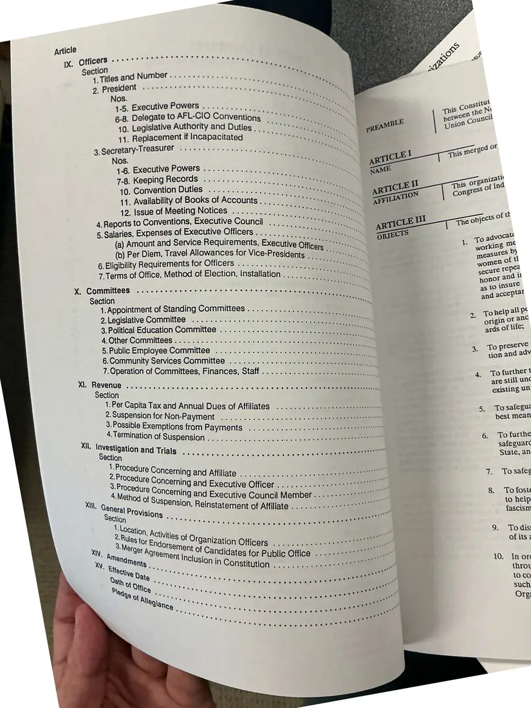
(open zoom view)Read the page text (machine-read, many errors)
This text was generated automatically from the photograph and has not been corrected. The image is the authoritative record.
Article IX. aw eH RR ONes® CON SE* 219) 81S aya gs Officers --- Section + Titles and Number...--- 00s... ee President ..--+-> PPS POSS ody, Oe Lhe i On Mame by No: ss a iat 4-5, Executive Powers ....... me 6-8. Delegate to AFL-CIO Conventions, i, sae 40. Legislative Authority and Duties, "°° +, Toy # pe 41. Replacement if Incapacitated geen i zee 3, Secretary-Treasurer ..--.+- ++... lag od OF, N MeN Ear, qcLe! This mere os. ate ptt 1-6. Executive Powers ...... 7-8. Keeping Records bettbeteeles ss, hy pizatit 10. Convention Dutles .............,.. ee eae aRTiCLeED This OPT ind 11. Availability of Books of Accounts..0 0) a <AFILIATION cong 42. Issue of Meeting Notices .........._. Bete, 4. Reports to Conventions, Executive Council .... Bers ‘ Sigs sascha Pi 5 Salaries, Expenses of Executive Officers... .... Res, annie (a) Amount and Service Requirements, Executive Offies eos a (b) Per Diem, Travel Allowances for Vice-Presidents . ols ee qorking g. Eligibility Requirements for Officers ..............,, Bein ae 7.Terms of Office, Method of Election, Installation... ._. BOD hc $44 sisarnee xX. Committees evoaenecveseonaeaneneee eae eeeeenauas SOP Ge tl 809195858 isvaletaty as t BRE ey and accept? Section ; 1.Appointment of Standing Committees ............. ‘ "7 iis 2. To help all pé 2 Legislative Committee’ =. 222.222) ieee Boia’ “in oF anc eat + SE eset sce saint orig . 3. Political Education Committee ........................07 ™ ards of life; 4,Other Committees: ..0.5.504 .4445.5.454)0.0 5 eee eee 5.Public Employee Committee ..........0000..eceeeeeeeeeere Bopieen 6.Community Services Committee ..... 0.00... cece eee eeeeeeeee papanda® 7. Operation of Committ i eee Pp ees, Finances, Staff. .... 05... .)-eeee 4. ‘To furthert are still unt AUS Revenue wih: ca ctsincia ses eics cher ree Pee eee rarer existing un Section \.Per Capita Tax and Annual Dues of Affiliates ©... 2... 00.0100 sse ese aoe 2.Suspension for Non-Payment ...... 0... cece eee eee et eee eee eensnn Se ea : peels Exemptions from Payments Caer seca . fermi . ‘ Perey eraree er eee ty DP xi | * mination of Suspension... . coc. coe eee areas 2 6. To furthe » ‘nvestigation and Trials. Retcd safeguarc Section a le ee eee ee eee 6 es wie lbce eis wile ole lelenegsresseneia nae State, an 1.Procedure : Concerning and Affiliate... 0... ..0c0cceeeeeeeeee eee ete 2. f i E 3. Procedure oseersneens Concerning and Executive Council Member...---:-:°°° to help 4.Method of Suspensi ‘ Xi, Pension, Reinst Baste f ts) . M atement f Mere jo orca” Herat Provisions oN of Affiliate + estes Section fo rae cnale say . Peso (sree ete occa cone: al a cacanevepenensterShoasuame en - 9. Todis » Activitie Worsement eaton Officers ... seeatae Me of its ; Feement Incly andidates for Public Office ...-.097°°77 a" 10. Inor Nelusian ; ‘ Sion in Constitution... ..,... seen ; ; throv to co such Org;

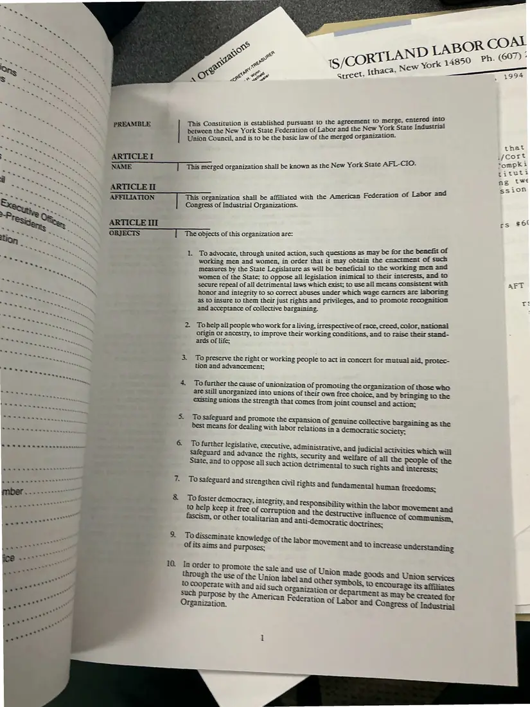
(open zoom view)Read the page text (machine-read, contains errors)
This text was generated automatically from the photograph and has not been corrected. The image is the authoritative record.
ustrial between the New York State Federation of Labor and the New York State Industri PREAMBLE This Constitution is established pursuant to the agreement tO merge, entered into Union Council, and is to be the basic law of the merged organization. ARTICLE I NAME | This merged organization shall be known as the New York State AFL-CIO. ARTICLE II ig * a Sy hg _ x = es and i a ir eh ee This organization shall be affiliated with the American Federation of Labor o- Faw SAE Congress of Industrial Organizations. Wen, aren hin, © 22 eS 2 DOH 2280294 20dm ee Se ee 9 2 ae aoe an ee eesees® Hay ARTICLE It OBJECTS [The objects of this organization are: 1. To advocate, through united action, such questions as may be for the benefit of working men and women, in order that if may obtain the enactment of such measures by the State Legislature as will be beneficial to the working men and women of the State; to oppose all legislation inimical to their interests, and to secure repeal of all detrimental laws which exist; to use ail means Consistent with honor and integrity to so correct abuses under which wage eamers are laboring as to insure to them their just rights and privileges, and 10 promote recognition and acceptance of collective bargaining. 2. Toheilp all people who work for a living, irrespective of race, creed, color, national origin or ancestry, to improve their working conditions, and to raise their stand- ards of life; 3. To preserve the right or working people to act in concert for mutual aid, protec- tion and advancement; “3 4. To further the cause of unionization of promoting the organization of thase who are sull unorganized into unions of their own free choice, and by bringing to the Casting unions the strength that comes from joint counsel and action; rel

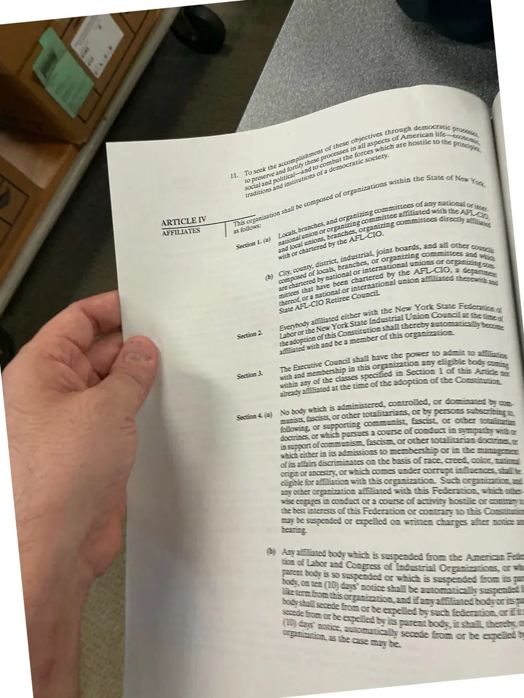
(open zoom view)Read the page text (machine-read, many errors)
This text was generated automatically from the photograph and has not been corrected. The image is the authoritative record.
ith th New York State Federaicg y , enber we Union Councd 2 the tim. sirmiated @ ) indesul ie - 2S ‘| mE ‘ origin OF ERCeSITy, Of Which cOsncs ender ConreEpt Enfipences, shall any other organization affilinied with this Federation, whch of wast camancs im condact or a course of activity hosuile of coma et the best mnicrests of this Federation or comaracy 3 ths Constmm em 4 Fa Ear rl a om pa Sy ree: : ae 0S Bis CAAT Bes Smet DKS a

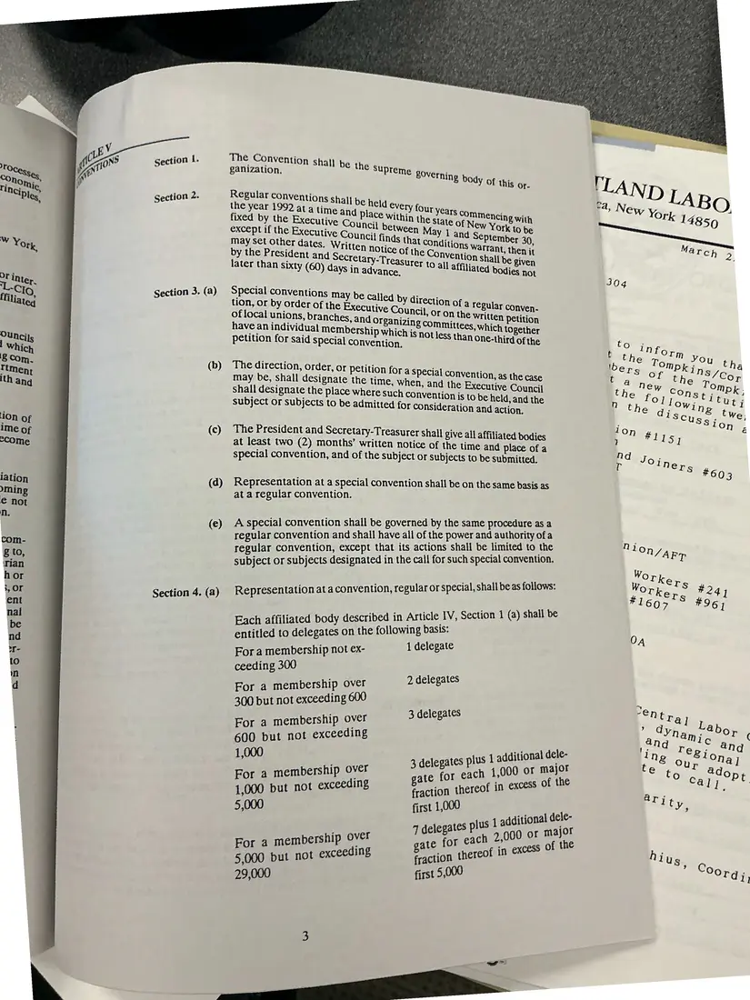
(open zoom view)Read the page text (machine-read, contains errors)
This text was generated automatically from the photograph and has not been corrected. The image is the authoritative record.
com- gto, rian hor 5, Or ‘ent nal Section 3. (a) Section 4. (a) The Convention sha ganization, 2 rie t . mber Ty-Treasurer shall give al i i at least two (2) months’ written notice of ite fies aad see special convention, and of the subject or Subjects to be submitted Representation at a speci i pecial convention sh i at a regular convention. pemaey A special convention shall be governed b oced : y the same procedure regular convention and shall have all of the power aa AUER regular convention, except that its actions shall be limited to the subject or subjects designated in the call for such special convention. Representation at a convention, regular or special, shall be as follows: Each affiliated body described in Article IV, Section 1 (a) shall be entitled to delegates on the following basis: For a membership not ex- 1 delegate ceeding 300 For a membership over 2 delegates 300 but not exceeding 600 3 delegates For a membership over 600 but not exceeding 1,000 : jus 1 additional dele- pars Ce ne aoe for each 1,000 or major ai 1 ae fraction thereof in excess of the ; first 1,000 jus 1 additional dele- Fotva Pere E Gae gate for each 2,000 or a a 5,000 but not exe fraction thereof 1 excess

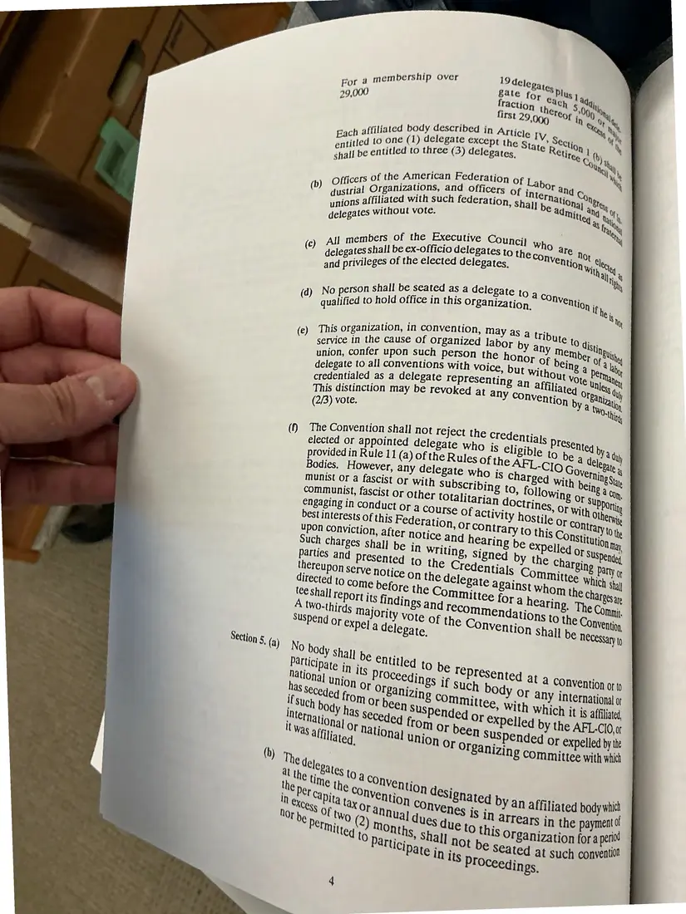
(open zoom view)Read the page text (machine-read, many errors)
This text was generated automatically from the photograph and has not been corrected. The image is the authoritative record.
ip Over 19 dele
nembership
om an
Bates
Late f
29,000
Or cacy tag,
fraction therege 0g oy |
TIESt 29,099 "°F iy age Nt |
Atticle py “a
scribed in Artic ely, Secu;
. body descri yee : ire
ch ae (1) delegate Helecane a Retiteg Coa u
Be tad' Te ied tothree (7) delegates, NE
entitle entitled to Ney |
shall
i vars} ; f .
he American eons a Labor an
Officers be aahintone and o
(b) trial OF.
dus
dq,
i FNatio "Brey
liated with such federation
ions affill
union
Naj
te Mltteg a
ithout vote.
tes wit
delega
tay |
il w
Executive Coungj sa
I BES of eeoities acto 0 the onventions Cle,
fc delegates sha of the elected delegates,
and privi
thy
S a delegate to a
I be seated as ie
(d) No Se office in this organiza
lifie
qua
I | enuon, May
1 organization, In COnvV
This
I abo
| in
0 dig
OF expelled by the ay ci
€N Suspended Or expelled Os
MON or or anizing committee with y
; hich |
d by an affiliated ee
COnVenes is in arrears in the paym “ol
2) ‘nnua dues due {O this Organization fora periot
Permitted’ aekths, sha
vention —
© Seated at such convent |
p Oceedings.
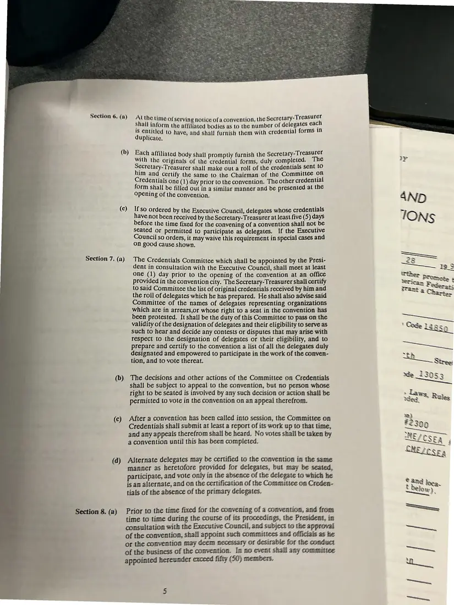
(open zoom view)Read the page text (machine-read, mostly readable)
This text was generated automatically from the photograph and has not been corrected. The image is the authoritative record.
Section 6. (a) At the time Of serving notice of a convention, the Secretary-Treasure” Shall inform the affiliated bodies as to the number of delegates ¢ac Is entitled to have, and shall furnish them with credential forms i duplicate, (b) Each affiliated body shall promptly furnish the Secretary-Treasurer with the originals of the Fcreaential forms, duly completed. The 1 Secretary-Treasurer shall make out a roll of the credentials sent to him and certify the same to the Chairman of the Committee on Credentials one (1) day prior to the convention. The other credential form shall be filled out in a similar manner and be presented at the Opening of the convention. 4 ND (c) Ifso ordered by the Executive Council, delegates whose credentials 7 have not been received by the Secretary-Treasurer at least five (5) days O N Ss before the time fixed for the convening of a convention shall not be Seated or permitted to participate as delegates. If the Executive Council so orders, it may waive this requirement in special cases and On good cause shown. Section 7.(a) The Credentials Committee which shall be appointed by the Presi- > . dent in consultation with the Executive Council, shall meet at least ao ee one (1) day prior to the opening of the convention at an office Wther Prumesa 3 provided in the convention city. The Secretary-Treasurer shall certify rican Pea to said Committee the list of original credentials received by him and the roll of delegates which he has prepared. He shall also advise said Committee of the names of delegates representing organizations which are in arrears,or whose right to a seat in the convention has been protested. It shall be the duty of this Committee to pass on the ee, validity of the designation of delegates and their eligibility to serve as * Code ] Zeca, such to hear and decide any contests or disputes that may arise with = respect to the designation of delegates or their eligibility, and to prepare and certify to the convention a list of all the delegates duly a . designated and empowered to participate in the work of the conven- “th tion, and to vote thereat. ~~ ——. Stree (b) The decisions and other actions of the Committee on Credentials ade eS shall be subject to appeal to the convention, but no person whose right to be seated is involved by any such decision or action shall be » Laws Ro. permitted to vote in the convention on an appeal therefrom. Sted, — (c) After a convention has been called into session, the Committee on Credentials shall submit at least a report of its work up to that time, and any appeals therefrom shall be heard. No votes shall be taken by a convention until this has been completed. (d) Alternate delegates may be certified to the convention in the same manner as heretofore provided for delegates, but may be seated, participate, and vote only in the absence of the delegate to which he is an alternate, and on the certification of the Committee on Creden- : and loca. tials of the absence of the primary delegates. — alow), Section 8. (a) Prior to the time fixed for the convening of 4 convention, and from = time to time during the course of its proceedings, the President, in . consultation with the Executive Council, and subject to the approval as of the convention, shall appoint such commitices and officials as he or the convention may deem necessary or desirable for the conduct of the business of the convention. In no event shall any commitice a appointed hereunder exceed fifty ( 50) members. nan

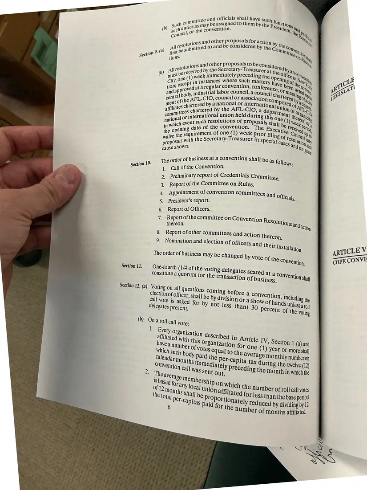
(open zoom view)Read the page text (machine-read, contains errors)
This text was generated automatically from the photograph and has not been corrected. The image is the authoritative record.
Section 10. ch €O central affiliates cha ittees © : : comm % international union held during this o the opening waive t The order of business at a convention shall be as fo 1, Callofth eceived by the Secretary-Treasurer att 1) week immediately preceding the © Offi pt in instances where such matters ie rove Z ; and aPP oO dy, industrial labor council, a councij AFL-CIO, council or association rtered by a national or internationg| a to) nt. departmer ore Ch hall e (1) v “Teo. be Tecg; €CUtive ved SS Of Agj lal Cas, a cil mittee and officials shall have suc, r the convention. tions and other proposals for action ybmitte d to and be considered byt ons and other proposals to be consi data regular convention, conferen hartered by the AFL-CIO, a t such resolutions of proposals s date of the convention. The he requirement of one (1) week prior js with the Secretary-Treasurer i sree e Convention. be assigned to them by the p,Utctio he Co dereg h b Com Os Side oe i Ven, Yan ave b the ce, Or n Charte ing llows, 2, Preliminary report of Credentials Committee 3, Report of the Committee on Rules, 4, Appointment of Convention committees and 5, President’s report. 6. Report of Officers. 7. Report of the committee on Conven thereon. fficials, 8. Report of other committees and action the 9. Rie ; TeOn, Nomination and election of Officers and their j INStallatj, On, ™j tee oi Ce j €Ning on Ney Ml Ed of A deny tio ; n Resolutions anda Ctiog

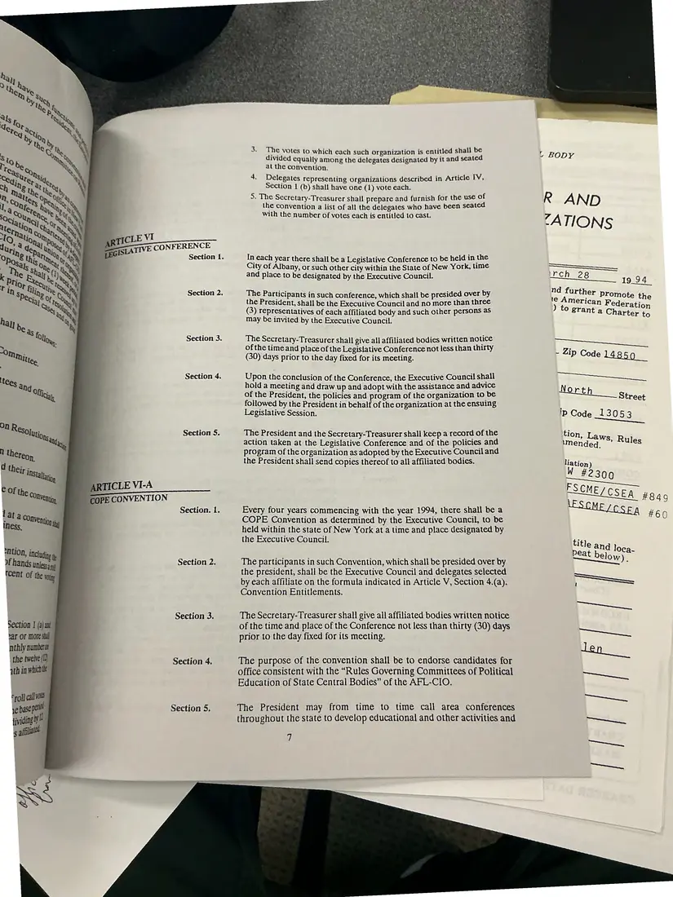
(open zoom view)Read the page text (machine-read, mostly readable)
This text was generated automatically from the photograph and has not been corrected. The image is the authoritative record.
Section 1. Section 2. Section 3. Section 4. Section 5. € Of the : ARTICLE VI-A OD VEALoy COPE CONVENTION Section. I. Section 2. : } Section 3. Section | (a) af sar or more sil athly numb the twelve (2) ; Section 4. hin which tt pollcall | se base pete } Section 5, viding affialé gat) The votes to which each such organization is entitled shall be divided equally among the delegates designated by it and seated at the convention. 4. Delegates representing organizations described in Article IV, Section 1 (b) shall have one (1) vote each. 5. The Secretary-Treasurer shall prepare and furnish for the use of the convention a list of all the delegates who have been seated with the number of votes each is entitled to cast. In each year there shall be a Legislative Conference to be held in the City of Albany, or such other city within the State of New York, time and place to be designated by the Executive Council. The Participants in such conference, which shall be presided over by the President, shall be the Executive Council and no more than three (3) Tepresentatives of each affiliated body and such other persons as may be invited by the Executive Council. The Secretary-Treasurer shall give all affiliated bodies written notice of the time and place of the Legislative Conference not less than thirty (30) days prior to the day fixed for its meeting. Upon the conclusion of the Conference, the Executive Council shall hold a meeting and draw up and adopt with the assistance and advice of the President, the policies and program of the organization to be followed by the President in behalf of the organization at the ensuing Legislative Session. The President and the Secretary-Treasurer shall keep a record of the action taken at the Legislative Conference and of the policies and program of the organization as adopted by the Executive Council and the President shall send copies thereof to all affiliated bodies. Every four years commencing with the year 1994, there shall be a COPE Convention as determined by the Executive Council, to be held within the state of New York at a time and place designated by the Executive Council. The participants in such Convention, which shall be presided over by the president, shall be the Executive Council and delegates selected by each affiliate on the formula indicated in Article V, Section 4.(a). Convention Entitlements. The Secretary-Treasurer shall give all affiliated bodies written notice of the time and place of the Conference not less than thirty (30) days prior to the day fixed for its meeting. The purpose of the convention shall be to endorse candidates for office consistent with the “Rules Governing Committees of Political Education of State Central Bodies” of the AFL-CIO. The President may from time to time call area conferences throughout the state to develop educational and other activities and L BODY ok eee Street iP Code_13053 _ ition, L mended” Rules

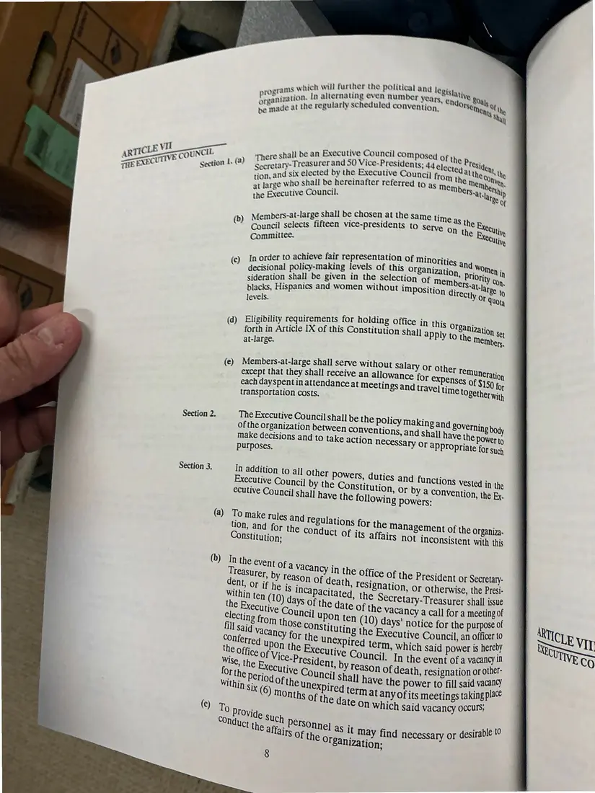
(open zoom view)Read the page text (machine-read, contains errors)
This text was generated automatically from the photograph and has not been corrected. The image is the authoritative record.
srograms which will further the political ang legis) organization. In alternating even number years, onsets Boa, ne made at the regularly scheduled convention, dors ere shall be an Executive Council compose qeoretary- Treasurer and 50 Vice-Presidents, aden Pigg tion, and six elected by the Executive Council from tt ut at large Who shall be hereinafter referred to as mene Mempe ed, the Executive Council. ders.atiy hip b) Members-al-large Shall be chosen at the same tip (b) Caincl selects fifteen vice-presidents to Sones AS the Bregy Committee. n live (c) In order to achieve fair representation of minorities decisional policy-making levels of this Organizatj, sideration shall be given in the selectio 10 blacks, Hispanics and women without im levels. and wo nh, Priog; n rT rs embers.at.jy) Position directly o, rt to UOtg (d) Eligibility requirements for holding office in thj forth in Article IX of this Constitution shall a He Organization = at-large. PPly to the Member’ €ason of death, resignation or other- . ave the id vacan Unexpired term power to fill said vacancy at anyofi king place fth hy OF its meetings taking P © date on which said vacancy occurs

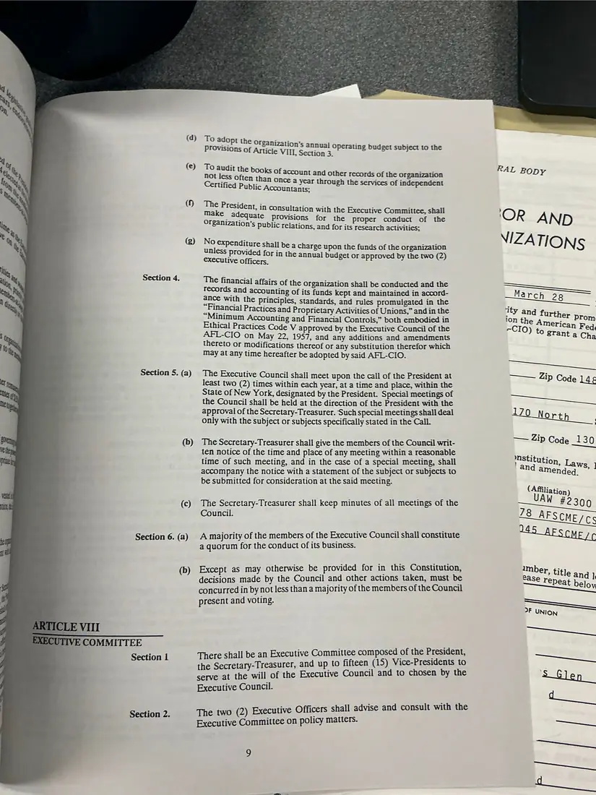
(open zoom view)Read the page text (machine-read, mostly readable)
This text was generated automatically from the photograph and has not been corrected. The image is the authoritative record.
Section 4. Section 5. (a) Section 6. (a) COMMITTEE Section 1 Section 2. No expenditure shall be a charge upon the funds of the organization unless provided for in the ann i ual bud executive officers. nee ree eae The financial affairs of the organization shall be conducted and the records and accounting of its funds kept and maintained in accord- ance with the principles, standards, and rules promulgated in the : inancial Practices and Proprietary Activities of Unions,” and in the Minimum Accounting and Financial Controls,” both embodied in Ethical Practices Code V approved by the Executive Council of the AFL-CIO on May 22, 1957, and any additions and amendments thereto or modifications thereof or any substitution therefor which may at any time hereafter be adopted by said AFL-CIO. The Executive Council shall meet upon the call of the President at least two (2) times within each year, at a time and place, within the State of New York, designated by the President. Special meetings of the Council shall be held at the direction of the President with the approval of the Secretary-Treasurer. Such special meetings shall deal only with the subject or subjects specifically stated in the Call. The Secretary-Treasurer shall give the members of the Council writ- ten notice of the time and place of any meeting within a reasonable time of such meeting, and in the case of a special meeting, shall accompany the notice with a statement of the subject or subjects to be submitted for consideration at the said meeting. The Secretary-Treasurer shall keep minutes of all meetings of the Council. A majority of the members of the Executive Council shall constitute a quorum for the conduct of its business. Except as may otherwise be provided for in this Constitution, decisions made by the Council and other actions taken, must be concurred in by not less than a majority of the members of the Council present and voting. There shall be an Executive Committee composed of the President, the Secretary-Treasurer, and up to fifteen (15) Vice-Presidents to serve at the will of the Executive Council and to chosen by the Executive Council. The two (2) Executive Officers shall advise and consult with the Executive Committee on policy matters.

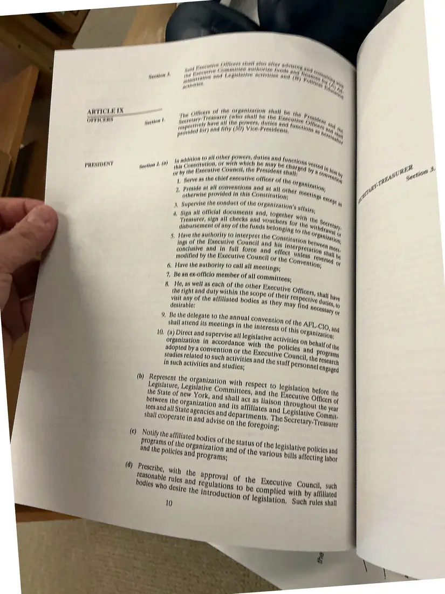
(open zoom view)Read the page text (machine-read, many errors)
This text was generated automatically from the photograph and has not been corrected. The image is the authoritative record.
ATH Ln 1h :
Lig ‘and Apottil
4 (i
peraineN wpatiiit
10),
(©) Notify 1)
het ae
H He, a4 Well Hs each Of the other
(b) Represent the or anizat
Legislature, Lepislative
the State of new York, and Shall net ag Haison thre
between the Organizat
Programs of the or
fiifleers ein AIA Alte
gui live
Ail prt ti
(ial Ale wy
U f
vtivill "
Maat Ahn
ie GET
e eiitli he ere iwi anall Of ibe
f W have all Hie Iisayi Hulleg
i peut
puapiet iy
pill
jy ie
(ili ae
at ve ia the Clef exeCUIVE Offleay ;
|, Herve
iherwlie provided 1h Hild Conatipiy
Hine
rine the eOnduEl OF he Organization
1, fupe Pig
is and
Hidial document ]
Me LUN ip all Checks and Vou
disbursement OFany OF the funds bee
§, Mave the authority 10 interpret the ¢
concluslye and in full force and
modified by (he Mxeoutive Council o¢
6, Have the authority to call all Meetings;
7, Hoan ox-offclo member of all comm)
ie right and duty within thé scope of
hy Of the Affiliated bodien ay th
desirable;
Ho the delegate to the ANNUAL G4
shall attend (ty meeuings in tt
(4) Direct and supervise ail
Organization in accordan
adopted by 4 convention 0
dion related to such net
AUCH ActVitiOs and Atudin:
C8 With the
On With respect {6
Calfiliated bodles ¢
introduction Of legis}
16 Hing
; Te
et TT aginiaiive MLV Ee
jr wd HAY (90) Vie Hregibeniy
+ OPbthar w th ij
ND te ay
Oi %y Alien
J ied I a NHOH boty,
| Hxecuilve Couneil and 4
ings of the Olfeus UNlegy
©Y may fj
Hopistative actly
r the Executive ¢
Vitles and the Maff p
t HY aly
16 Hy if Hi
MH Hig, iy
mH My Pithees tip
H he thin
Ut yp Ai
tid FHA iggy Ot ig
: ig
W ihe y Hii ze;
idé at all CONVENOR And at aii Olhiay
9, Pion
NB6Lin
ions W they
1G OF the wi Betray
Us] OF tiny
14 MOD tetatign Hg
7 ; Of i
the CONV Nie Belt
toga;
Executive O
Ive ¢ 5 hati
heir Feapectivy dati
nd Necestary Of
ON behalf of iy,
Policies ind mace
| Progra,
OUNCH, the Tesoare),
JOM longa peg
| legislation before thy
Committees, and the f
Executive Officers of
DUBNOUL the year
Mc Lepisiative Commit,
& Secretary: Trousuyroy
‘Togistative poticles and
© VaNOUS billy Affecting labor
Nd propramg:
f the Executive Counell, such
Fegulations to be Complied with by affiliated
4U6n, Such rules shail
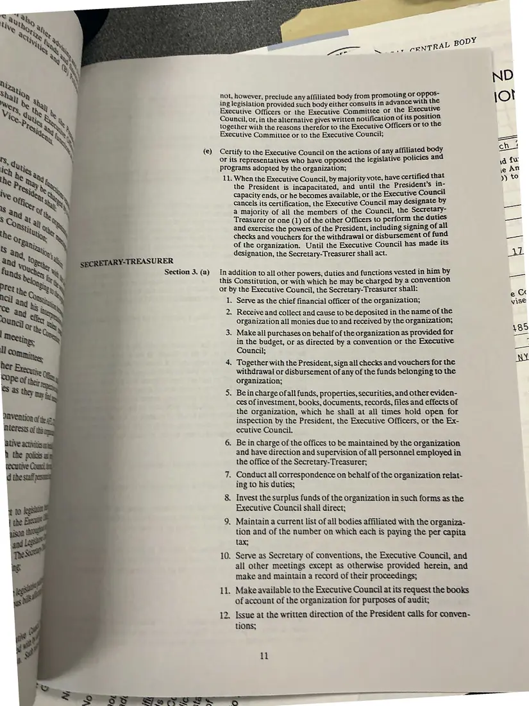
(open zoom view)Read the page text (machine-read, mostly readable)
This text was generated automatically from the photograph and has not been corrected. The image is the authoritative record.
KEA URER Section 3. (a) not, however, preclude any affiliated body from promoting Or OPpos- ing legislation provided such body either consults in advance with the Executive Officers or the Executive Committee or the Executive Council, or, in the alternative gives written notification of its tte together with the reasons therefor to the Executive Officers or to the Executive Committee or to the Executive Council; Certify to the Executive Council on the actions of any affiliated ee! or its representatives who have opposed the legislative policies an programs adopted by the organization, 20k. When the Executive Council, by majority vote, have certified St the President is incapacitated, and until the President's In- capacity ends, or he becomes available, or the Executive Council cancels its certification, the Executive Council may designate by a majority of all the members of the Council, the Secretary- Treasurer or one (1) of the other Officers to perform the Cort and exercise the powers of the President, including signing of checks and vouchers for the withdrawal or disbursement of fund of the organization. Until the Executive Council has made its designation, the Secretary-Treasurer shall act. In addition to all other powers, duties and functions vested in him by this 10. 11. 12. Issue at the written direction of the President calls for conven- Constitution, or with which he may be charged by a convention or by the Executive Council, the Secretary-Treasurer shall: Serve as the chief financial officer of the organization; Receive and collect and cause to be deposited in the name of the Organization all monies due to and received by the organization, Make all purchases on behalf of the organization as provided for in the budget, or as directed by a convention or the Executive Council; Together with the President, sign all checks and vouchers for the withdrawal or disbursement of any of the funds belonging to the organization; Bein charge ofall funds, properties, securities, and other eviden- ces of investment, books, documents, records, files and effects of the organization, which he shall at all times hold open for inspection by the President, the Executive Officers, or the Ex- ecutive Council. Be in charge of the offices to be maintained by the organization and have direction and supervision ofall personnel employed in the office of the Secretary-Treasurer; Conduct all correspondence on behalf of the organization relat- ing to his duties; Invest the surplus funds of the organization in such forms as the Executive Council shall direct; Maintain a current list of all bodies affiliated with the organiza- tion and of the number on which each is paying the per capita tax, Serve as Secretary of conventions, the Executive Council, and all other meetings except as otherwise provided herein, and make and maintain a record of their proceedings; Make available to the Executive Council at its request the books of account of the organization for purposes of audit; tions;

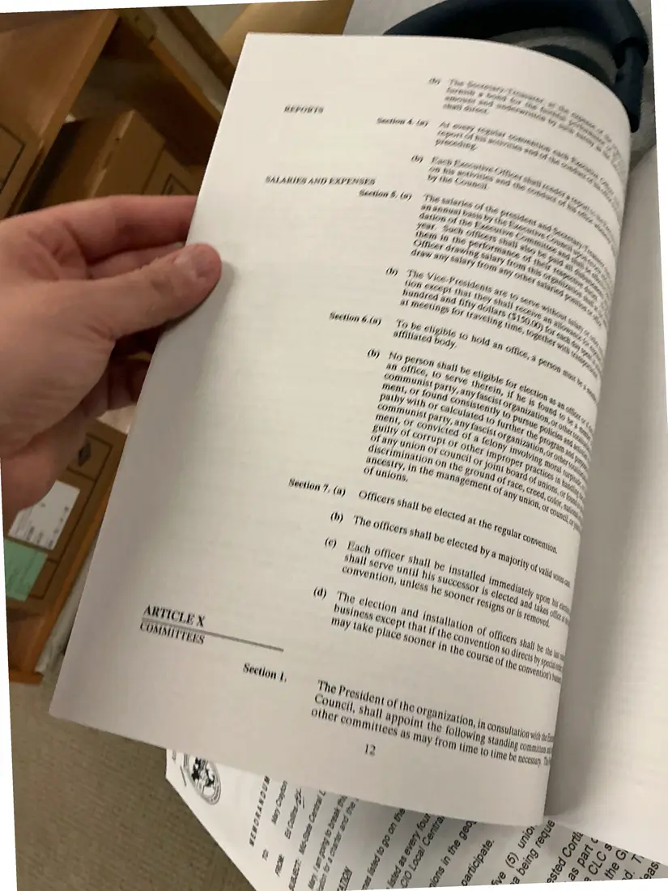
(open zoom view)Read the page text (machine-read, many errors)
This text was generated automatically from the photograph and has not been corrected. The image is the authoritative record.
GELS fH

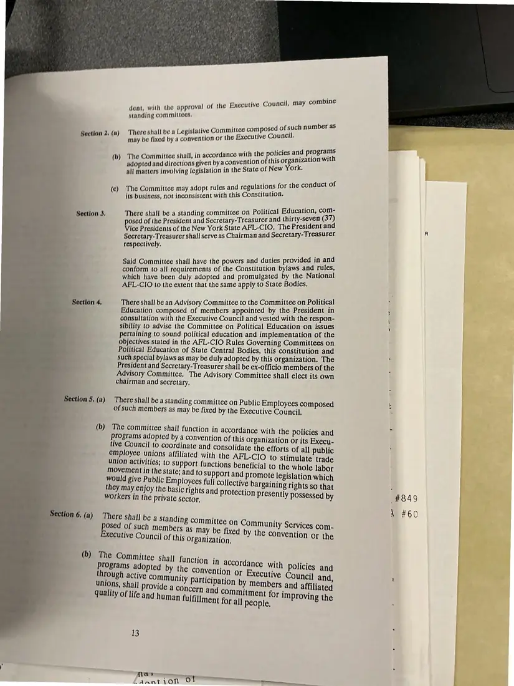
(open zoom view)Read the page text (machine-read, mostly readable)
This text was generated automatically from the photograph and has not been corrected. The image is the authoritative record.
z. ive Counci combine
dent, with the approval of the Executive Council, may
standing committees,
spislati : ¥ mposed ofsu h nu
(b) The Committee shail, in accordance with the policies 08s Hie
adopted and directions given by a convention of this orga
all matters involving legislation in the State of New York.
j f
(c) The Committee may adopt rules and regulations for the conduct 0
its business, not inconsistent with this Constitution.
{ itical Education, com-
tion 3, There shall be a standing committee on Political Edi
- osed of the President and Secretary-Treasurer and thirty-seven (67)
ice Presidents of the New York State AFL-CIO, The President an :
Secretary-Treasurer shall serve as Chairman and Secretary-Treasure:
respectively.
Said Committee shall have the powers and duties provided in and
conform to all requirements of the Constitution bylaws and rules,
which have been duly adopted and promulgated by the National
AFL-CIO to the extent that the same apply to State Bodies.
Section 4, There shall be an Advisory Committee to the Committee on Political
> Education composed of members appointed by the President in
consultation with the Executive Council and vested with the respon-
sibility to advise the Committee on Political Education on issues
pertaining to sound political education and implementation of the
objectives stated in the AFL-CIO Rules Governing Committees on
Political Education of State Central Bodies, this constitution and
such special bylaws as may be duly adopted by this organization. The
President and Secretary-Treasurer shall be ex-officio members of the
Advisory Committee. The Advisory Committee shall elect its own
chairman and secretary,
. ‘Section 5. (a) There shall be a standing committee on Public Employees composed
* of such members as may be fixed by the Executive Council.
(b) The committee shail function in accordance with the policies and
programs adopted by a convention of this Organization or its Execu-
tive Council to coordinate and consolidate the efforts of all public
employee unions affiliated with the AFL-CIO to stimulate trade
union activities; to Support functions beneficial to the whole labor
and promote legislation which
a en a
faantion oF eee
Be RT
#849Additional copies
The same document was photographed more than once. These copies may carry different handwriting, stamps, or paper.

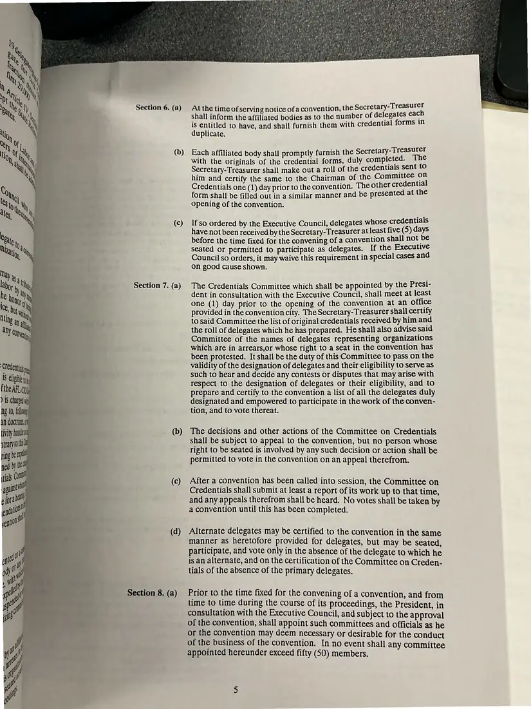
(open zoom view)Read the page text (machine-read, mostly readable)
This text was generated automatically from the photograph and has not been corrected. The image is the authoritative record.
Section 6. (a) Section 7. (a) Section 8. (a) At the time of serving notice of a convention, the Secretary-Treasurer of delegates each Shall inform the affiliated bodies as to the number ; n is entitled to have, and shall furnish them with credential forms 1 duplicate. Each affiliated body shall promptly furnish the Secretary-Treasttet with the originals of the credential forms, duly completed. < Secretary-Treasurer shall make out a roll of the credentials sent to him and certify the same to the Chairman of the Committee ‘al Credentials one (1) day prior to the convention. The other credentia form shall be filled out in a similar manner and be presented at the Opening of the convention. If so ordered by the Executive Council, delegates whose credentials have not been received by the Secretary-Treasurer at least five (5) days before the time fixed for the convening of a convention shall not be seated or permitted to participate as delegates. If the Executive Council so orders, it may waive this requirement in special cases and On good cause shown. The Credentials Committee which shall be appointed by the Presi- dent in consultation with the Executive Council, shall meet at least one (1) day prior to the opening of the convention at an office provided in the convention city. The Secretary-Treasurer shall certify to said Committee the list of original credentials received by him and the roll of delegates which he has prepared. He shall also advise said Committee of the names of delegates representing organizations which are in arrears,or whose right to a seat in the convention has been protested. It shall be the duty of this Committee to pass on the validity of the designation of delegates and their eligibility to serve as such to hear and decide any contests or disputes that may arise with respect to the designation of delegates or their eligibility, and to prepare and certify to the convention a list of all the delegates duly designated and empowered to participate in the work of the conven- tion, and to vote thereat. The decisions and other actions of the Committee on Credentials shall be subject to appeal to the convention, but no person whose right to be seated is involved by any such decision or action shall be permitted to vote in the convention on an appeal therefrom. After a convention has been called into session, the Committee on Credentials shall submit at least a report of its work up to that time, and any appeals therefrom shall be heard. No votes shall be taken by a convention until this has been completed. Alternate delegates may be certified to the convention in the same manner as heretofore provided for delegates, but may be seated, participate, and vote only in the absence of the delegate to which he is an alternate, and on the certification of the Committee on Creden- tials of the absence of the primary delegates. Prior to the time fixed for the convening of a convention, and from time to time during the course of its proceedings, the President, in consultation with the Executive Council, and subject to the approval of the convention, shall appoint such committees and officials as he or the convention may deem necessary or desirable for the conduct of the business of the convention. In no event shall any committee appointed hereunder exceed fifty (50) members.

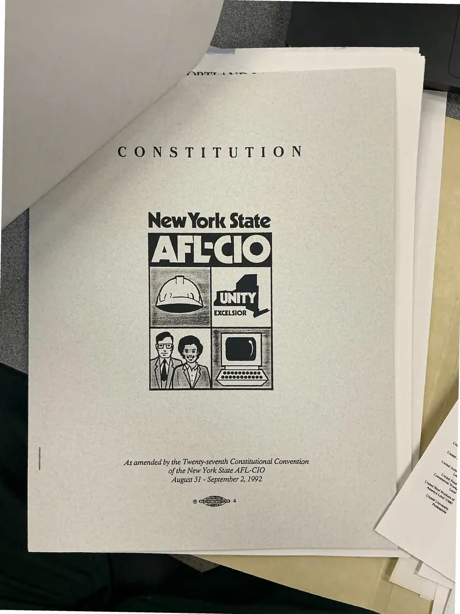
(open zoom view)Read the page text (machine-read, mostly readable)
This text was generated automatically from the photograph and has not been corrected. The image is the authoritative record.
~ CONSTITUTION New York State As amended by the Twenty-seventh Constitutional Convention of the New York State AFL-CIO August 31 - September 2, 1992
See something wrong, or recognize a person or event? Send a correction. If you hold rights in this item or think it should not be public, write to the same address.